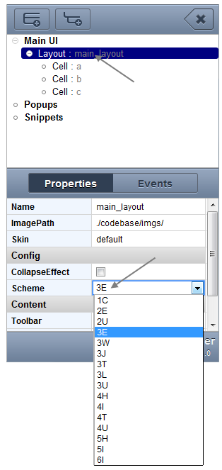
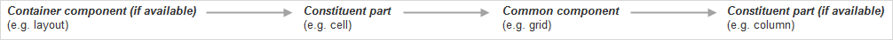
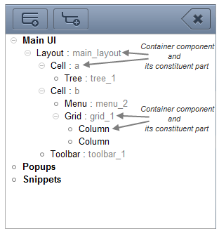

General principles
In this chapter you'll find out general principles of building design (inheritance and disposal of components).
The main building ground of your design is Components tree. Exactly there you add and delete elements of the design.
Shortly, designing consists of four stages:
- Setting the scheme of 'Main layout'.
- Adding the needed elements.
- Configuring the elements.
- Saving the design.
Step 1. Designing starts from 'Main layout'.
It's a mandatory component and can't be deleted. But you can set for it any scheme you wish (by default, 3U scheme).

Step 2. Adding the desired elements.
From all the DHTMLX components we should single out a little group of items that differ from all others. These are container components which intend for disposal other components into them. They are:
- window (available from Popups root)
The inheritance chain of the tree has four basic nesting levels:

- container components can be nested one into another. So, in the inheritance chain can be several container components with the appropriate constituent parts.
- constituent parts of common components can have its own constituent parts. So, in the inheritance chain these blocks can also be repeated.

There are 2 ways to add component of the same or of the lower nesting level: through pop-up context menu and through controls of the 'Components tree'.
Step 3. Configuring the elements
By that we mean to set their properties to the desired values and add the appropriate event handlers from the Properties/events pane.

Step 4. Saving your design
At this point, you can save your design to local storage for usage in Designer later.